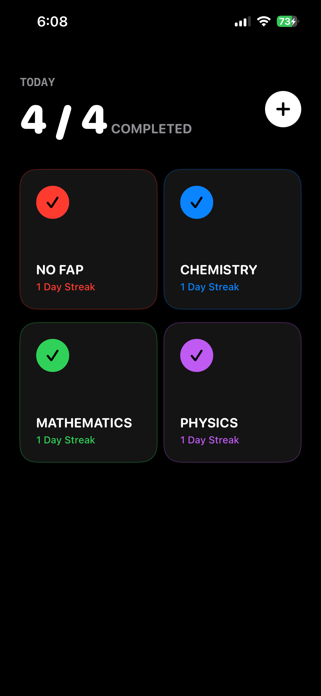
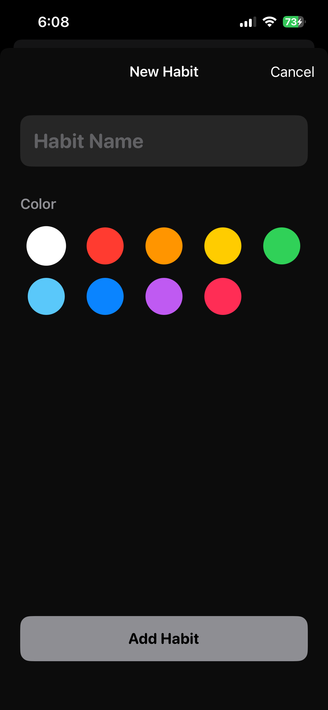
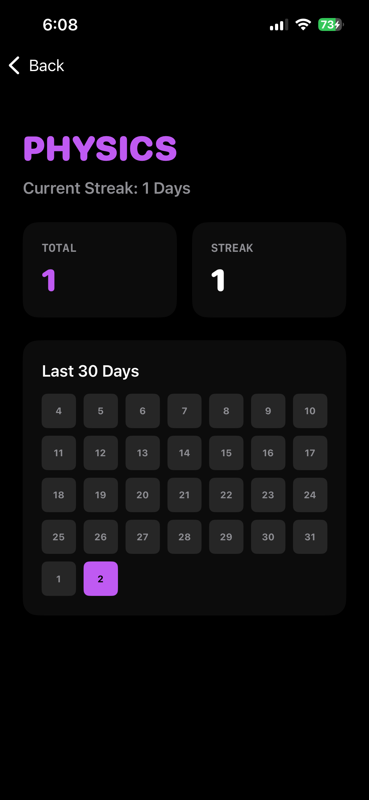

Features
- Pure Black UI: Zero distractions, dark mode perfection.
- Streak Heatmap: Visualize 30 days of progress at a glance.
- Daily Dashboard: Satisfying animated toggles for completion.
- Custom Habits: Define colors and titles for complete personalization.
- Local Storage: Your data never leaves your device. 100% privacy.
App Screenshots



⚠
This is a sideloaded .ipa file. You will need AltStore, Sideloadly, or a developer certificate to install it on your iPhone.
↓ Download TrackerM.ipa
Size: ~3MB • Version: 1.0.0